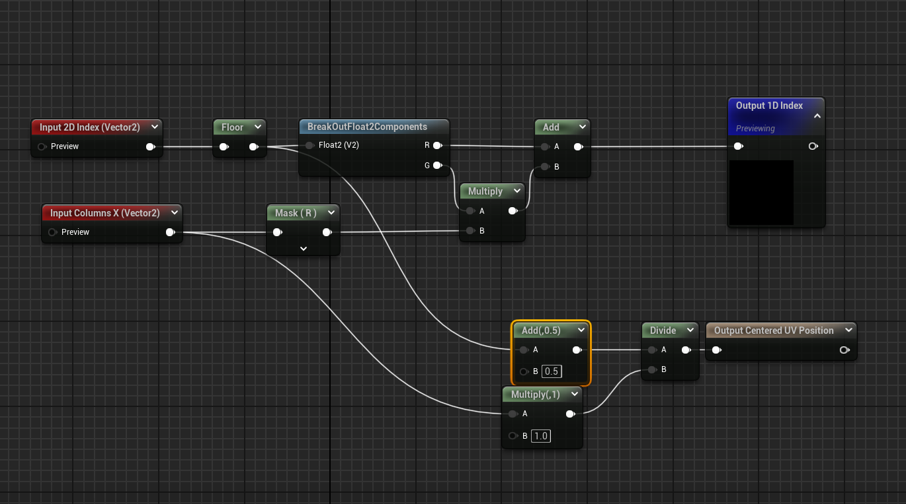
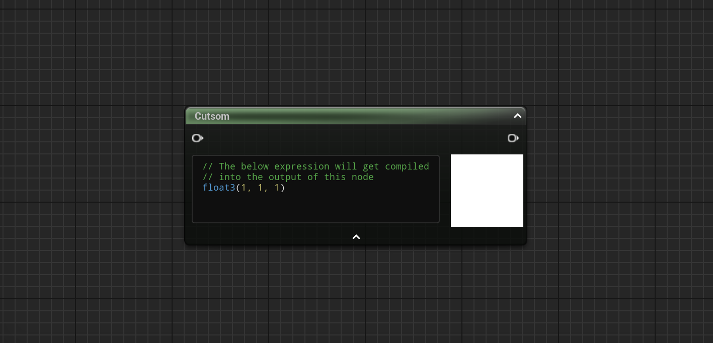
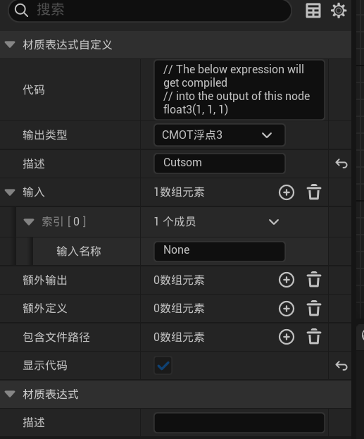
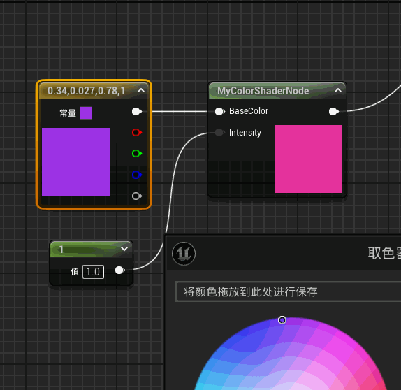
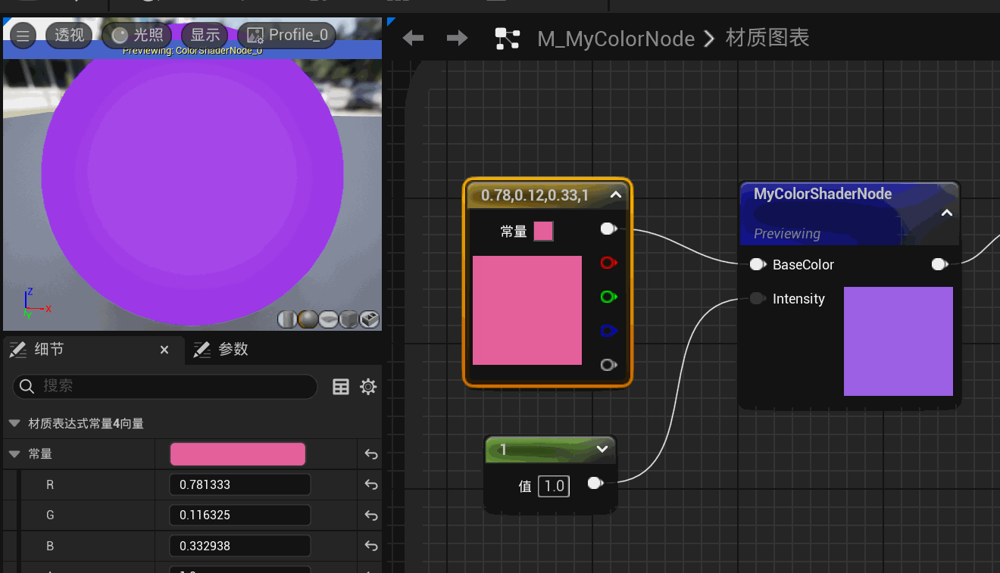

虚幻引擎的Shader课堂之Material Expression
转载自个人博客虚幻引擎的Shader课堂之Material Expression
前言
在上一章的内容我们大致介绍了一下虚幻引擎Global Shader的相关内容，按照计划来说，接下来就是Material Shader了。不过由于最近工作比较忙，没有时间来好好整理Material Shader的内容，并且Material Shader在本系列也是比较重要的一个知识点，所以为了能把它讲清楚，我决定还是将这篇文章推迟。
因此今天我会先来介绍一个和Material Shader比较相关的概念，就是Material Expression。
Material Expression是一个非常重要的部分，它可以让我们在材质编辑器中创建一个自定义的材质节点，来实现各种各样的计算，影响最终的渲染效果。Material Shader很多时候也是通过Material Expression来应用在渲染流程中的。所以，理解Material Expression的基本概念和用法，对于掌握Material Shader的实现也非常重要。
另外这里要提一嘴的就是，本次教程所基于的引擎版本为5.5，若是有些示例代码或者方法不生效可能是版本不一致导致的，但是概念应该基本相通，可以作为参考。
Material Expression的基本概念
Material Expression是一个非常重要的概念，它是构建材质（Material）的核心组件，用于定义材质的外观、行为和交互逻辑。材质通过可视化节点网络（材质图）连接各种表达式，实现对光照、纹理、颜色、物理属性等的复杂控制。
上面的说起来可能比较抽象，简单的来说，就是在材质蓝图（Material Blueprint）中，除了辅助性的节点（如注释、分组、参数节点等等），绝大部分的功能性的节点都是Material Expression。例如：
- 数据采样：UMaterialExpressionMaterialSample、UMaterialExpressionVertexColor、UMaterialExpressionSceneColor等等
- 数学计算: UMaterialExpressionAdd、UMaterialExpressionMaterialXMinus等等
- 属性控制：UMaterialExpressionScalarParameter、UMaterialExpressionVectorParameter等等
还有很多其他类型就不一一列举了。
这些Material expression，在材质蓝图文件中都是以节点的形式存在的，我们可以通过拖拽的方式将它们连接起来，来实现我们想要的效果。

那么接下来，我们就以一个简单的例子，来介绍一下如何实现自定义的Material Expression。
实现一个简单的Material Expression
接下来我们来实现一个很简单的材质节点：将传入的颜色的r和b通道互换，并乘以另外一个传入的参数Intensity，将最后的结果输出。
创建一个新的Material Expression类
首先，我们新建一个继承自UMaterialExpression的类，如下：
1 | |
在这个类的内容其实很通俗易懂，由以下三个部分组成：
- 输入引脚：顾名思义，用于定义材质节点的输入参数。每个输入引脚都是类型为FExpressionInput的UPROPERTY。这个例子我们定义了两个引脚，分别是输入颜色和强度。
- 编译函数Compile：它定义了如何将这个节点编译成Shader代码，以及如何传入对应的参数。这个方法是材质节点至关重要的逻辑部分。
- 获取节点的标题：这个函数用于获取节点的标题，在材质蓝图中显示。
当然其实还有很多可以重写的方法，比如PostLoad、PostEditChangeProperty等等，这些方法都是在材质节点的生命周期中被调用的，我们可以根据需要来重写它们。
实现GetCaption函数非常简单，就不单独讲了，示例代码如下：
1 | |
实现Compile函数
接下来我们来实现Compile函数，这个函数是材质节点的核心逻辑，它定义了如何将这个节点编译成Shader代码，以及如何传入对应的参数。
1 | |
上方是完整的代码，接下来我来逐步解释一下：
输入参数
1 | |
代码的第一部分是处理输入参数。我们定义了BaseColor和Intensity两个输入引脚，首先利用：
1 | |
来判断该引脚是否有输入。如果有输入，通过Compile方法获取对应的输入参数。如果没有输入，就使用默认值。
在获取到连接值或者是默认值之后，我们得到一个int32类型的变量索引，这个索引是引擎的Shader编译器用于高效管理作用域的变量的。
生成自定义Shader代码
1 | |
接下来，为了让我们的material expression可以灵活的实现我们想要的功能，我决定在我们的material expression中，使用UMaterialExpressionCustom来实现自定义Shader。
UE预设了非常多样的material expression，如加减、采样、以及上面的Custom等等。我们在实现自己的material expression的时候，可以将UE的预设节点组合起来。

所以第二部分的代码逻辑，就是初始化Custom节点，设置对应的输入参数。Custom节点自带一个输入，所以我们可以直接将**inputs[0]**设置为我们的BaseColor。而后面的参数如Intensity就需要加到Inputs队列中。

然后设置OutputType为CMOT_Float3，这是因为我们的输出类型是一个float3类型，即RGB颜色。
最后设置Code，这是我们的Shader代码，我们可以在这里实现我们想要的功能。这里我简单的实现了一个将BaseColor的r和b通道互换，并乘以Intensity的功能。这一部分也对应Custom节点的代码部分。
最后的部分：
1 | |
这一段内容，是将我们的输入参数传入到Custom节点中，以便在Shader中使用。其中BaseColorInput、intensityInput这两个索引需要对应到我们之前设置的Custom节点的Inputs。
最后，我们调用Compiler的CustomExpression方法，将我们的Custom节点编译成Shader代码，并返回结果对应的索引。
好了，下面就是我们节点的输出结果了。

组合多个material expression方法
正如我前面所说，我们可以将UE的预设节点组合起来实现更加复杂的功能。我将上面节点的代码稍作修改：
1 | |
我将Custom Node的结果暂存，然后将现实的时间作为参数，取sine值后和Custom Node的结果相加，就可以得到一个随着时间变化的颜色。

通过这个方法，我们有这非常大的自由度去实现各种各样的节点效果。
结语
好了，到这里，我们就完成了一个简单的Material Expression的实现。当然，这只是一个简单的示例，我们可以根据自己的需求去实现更加复杂的节点。
当然可能也有同学有疑问的就是，为什么不直接通过蓝图来实现类似的效果，蓝图完全也是可以做到的，也没有这么麻烦。
对我来说，用C++的代码来实现Material Expression，有以下几个好处：
- 性能：C++实现的Material Expression在材质编译时直接生成优化的HLSL代码，避免蓝图节点组合可能产生的冗余计算。
- 和引擎底层关联：Material Expression可以直接访问引擎的底层API，例如访问纹理、光照等信息，也可以根据平台的信息来使用不同的方法。
- 可维护性：如果逻辑比较复杂的话，C++代码更易于维护和调试，我想谁也不想去debug一个复杂的像意面图一样的蓝图吧。
还有其他的好处，当然蓝图也不是一无是处，灵活掌握两种方法，在不同的情况下使用合适的方法，才能更好的实现我们的需求。
参考资料
本次教程的内容可以参考引擎的代码：UnrealEngine\Engine\Plugins\Interchange\Runtime\Source\Import\Private\MaterialX\MaterialExpressions\MaterialExpressionFractal3D.cpp